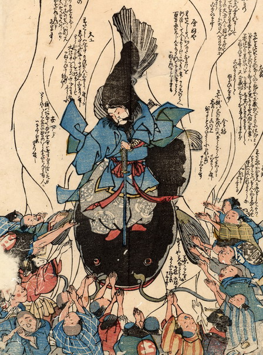

大鯰の上に鹿島大明神が乗り、鯰の額に剣を突き刺して、押さえつけている。そのまわりを人々が取り囲み、合わせた両手をさしのべて、それぞれに願いを訴えている。
出典：親書誌：U426_nichibunken_0176：（鯰を押える鹿島大明神；ナマズヲオサエルカシマダイミョウジン）／日付：2010／資源識別子：U426_nichibunken_0176_0001_0000
Copyright (c)2010- International Research Center for Japanese Studies, Kyoto, Japan. All rights reserved.